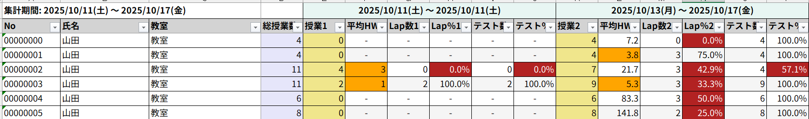

システム概要
MSLの授業集計から出力されたExcelファイルを読み込み、講師別・週別の授業数や宿題の平均などを自動で集計してくれる業務ツールです。
手作業でのデータ整理や計算の時間をなくし、そのまま報告や分析に使える見やすいレポートを数秒で作成します。
基本の操作手順
1. データファイルの準備
集計したいExcelファイルをパソコンに保存しておきます。
事前のデータ加工は不要ですが、集計元ファイルを開いたままにしているとエラーになるため、必ずExcel画面は閉じておいてください。
2. ソフトの起動とファイルの選択
ダウンロードしたソフト（MSL集計ソフト_vXX.exe(XXは数字)）をダブルクリックして起動します。
最初にファイル選択画面が開きますので、手順1で準備したExcelファイルを選んで「開く」を押してください。
もし、ファイル名をscube2-lesson-result_*.xlsxから変更した場合は、右下の「集計データ～」(開くボタンの上にある)をクリックして、「Excel～」を選択してください。
3. 「開始曜日」の選択
ファイルを選択すると、続いて「土曜始まり（土〜金）で集計しますか？」という確認画面が表示されます。
- はい ： 1週間の区切りを「土曜日〜金曜日」として集計します。(社員向け)
- いいえ： 1週間の区切りを「月曜日〜日曜日」として集計します。(講師向け)
どちらかを選ぶと、自動的に集計処理がスタートします。
4. 処理完了とファイルを開く
数秒〜数十秒待つと、画面に「処理が完了しました！」というメッセージと、処理した件数などが表示されます。
メッセージの下にある「作成されたファイルを開きますか？」で「はい」を選ぶと、完成した集計結果のExcelが自動で開きます。
集計結果のファイルは、元のファイルと同じ場所に自動で保存されています
ファイル名は集計結果_[yyyymmdd-yyyymmdd]_yymmdd-hhmmss.xlsxの形式になります。
2020/01/01～2025/12/31の集計データを2026/04/01-12:34:56に処理した場合
集計結果_[20200101-20251231]_260401-123456.xlsxとなります。
5. 【推奨】エクセルの列幅を整える操作
Excelファイルが開くと同時に、画面上に「おすすめの操作」という案内が表示されます。
文字が隠れず綺麗に表示されるよう、以下のキーボード操作を行ってください。
- キーボードの Ctrl を押しながら A を押し、シート全体を選択します。
- そのまま、Alt ➔ H ➔ O ➔ I の順番でキーを1つずつ押します（列幅の自動調整）。
出力データ（Excel）の見方
完成したExcelファイルには、用途に合わせて2つのシート（タブ）が作成されます。
シート①：「全集計」
読み込んだすべてのデータをそのまま集計した基本のシートです。（タブの色：青）
シート②：「除外済み集計」
特定の学年（高3・高卒）と、特定の科目（国語・小論文）のデータを自動的に除外して集計したシートです。
受験生や特殊科目を抜いた、通常の授業ベースでの数値を分析したい場合に使用します。（タブの色：緑）
自動追加される「AVG（平均）」行について
各教室のデータの一番上の行には、「氏名：AVG（平均）」という行が自動的に追加されます。
これにより、講師個人の数値だけでなく、「その教室全体の平均値」や「その教室の合計授業数」がひと目で比較できるようになっています。
出力項目の詳細（ヘッダー列の説明）
Excel上で生成される各列の定義と算出ルールです。色付きの項目は、実際のExcel上でも同色が適用されます。
| ヘッダー項目名 | データの内容と算出ルール |
|---|---|
| No | システム上の講師番号（入力データの「担当講師N0」をそのまま出力します） |
| 氏名 | 授業を担当した講師の氏名 |
| 教室 | 授業が実施された対象の教室・拠点名 |
| 総授業 | 対象の全期間内における、その講師が担当した有効授業数の合計です。 ※視覚的に区別するため、Excel上では基本色としてラベンダー色が適用されます。 |
| 授業 | 各週ごとの担当授業数（欠席データなどは自動除外済）です。 ※各週の区切りのため、Excel上では基本色としてカーキ色が適用されます。 |
| 平均HW | 各週の宿題ページ数の平均値です。（単語帳など除外対象の教材を省いた実質平均） |
| Lap回数 | 各週のLap（ラップ）実施回数の合計です。 |
| Lap％ | 各週の授業数に対するLap実施率です。（Lap実施回数 ÷ 有効授業数） |
| テスト回数 | 各週の確認テスト実施回数の合計です。 |
| テスト％ | 各週の授業数に対する確認テスト実施率です。（テスト実施回数 ÷ 有効授業数） |
条件付き書式（アラート）の適用基準
規定の目標値を下回った項目には、Excel上で自動的に以下の警告色が適用され、視覚的に課題を発見できるようになります。
| 対象指標 | 適用される警告色 | アラートが発動する条件 |
|---|---|---|
| 平均HW (宿題) | 淡いオレンジ | 週の宿題平均ページ数が 6.0 未満 に落ち込んだ場合 |
| Lap％ / テスト％ | 淡い赤ピンク | 週の実施割合が 70% 未満 に落ち込んだ場合 |
出力サンプル (※開発中のイメージです。)

自動処理・除外のルール
ソフトはただ計算するだけでなく、データをおかしくする原因を自動で省いてから計算を行っています。
- 欠席の除外：
出欠のステータスが「出席」となっていないデータは、すべて計算の対象外となります。 - 宿題ページ数の上限：
宿題１つのページ数を３０ページまでとします。上限を超える場合は、上限値を使い「平均HW」を計算します。 - 特定宿題のページ数除外：
以下の名前が入っている宿題は、「平均HW」の計算から自動的に外されます。 - タンゴ
- 単語
- シスタン
- シス単
- ターゲット
- リープ
- leap
- ゲットスルー
- パスタン
- パス単
- マドンナ
- 特定学年・科目の除外：
以下の学年・科目は、「除外済み集計」シートの計算から自動的に外されます。 - 高3
- 高卒
- 国語
- 小論文
トラブルシューティング（エラー・よくある質問）
- Q. ダウンロードしたソフトを開くと「WindowsによってPCが保護されました」という青い画面が出る
-
A. インターネットからダウンロードした新しいソフトを初回起動する際に出る、Windowsの標準的なセキュリティ警告です。
画面左側にある「詳細情報」という文字をクリックすると、右下に「実行」ボタンが現れます。この「実行」ボタンを押すことで通常通り起動できます。 - Q. 「出力先のExcelファイルが開かれたままです」と表示される
-
A. 前回作成した「集計結果のExcelファイル」を画面で開いたまま、もう一度ソフトを動かそうとしています。
開いている集計結果のExcelを「×」ボタンで完全に閉じてから、再度ソフトを実行してください。 - Q. 「集計対象のデータが見つかりませんでした」と表示される
-
A. 読み込ませたファイルの中に、集計できるデータが1件もありません。
一番上の見出しの行に「出欠」「担当講師名」「担当講師N0（最後は数字のゼロ）」「教室」の文字が正しく入っているか確認してください。文字の前後に余計な空白（スペース）が入っている場合もエラーになります。 - Q. 処理は完了したが、出力されたExcelの数値が「0件」や空欄になってしまう
-
A. データの「出欠」列が、正確に「出席」という文字になっていない可能性があります。
「欠席」「振替」などのデータや、前後にスペースが入っている文字は計算対象外として除外されるため、元データの入力状態をご確認ください。 - Q. 出力されたExcelの数字が「#####」のようにシャープになって見えない
-
A. Excelの列幅が、表示される数字に対して狭すぎる場合に発生する、Excel特有の表示仕様です。
キーボード操作（Ctrl + A を押したあと、Alt ➔ H ➔ O ➔ I）を行うことで、列の幅が自動調整され正しい数値が表示されます。 - Q. 複数のシートがあるExcelファイルを読み込ませた場合はどうなりますか？
-
A. 本システムは、対象となるExcelファイルの「一番左にあるシート（1枚目のシート）」のみを自動で読み込みます。
集計したいデータは、必ず1枚目のシートに配置してください。 - Q. 前に作成した集計結果は、再度ソフトを動かすと上書きされて消えますか？
-
A. いいえ、消えません。
出力されるファイル名には、作成時の「日付と時間（例：250101-123456）」が自動的に付与されるため、同じフォルダに保存しても別のファイルとして履歴が蓄積されます。 - Q. ファイルを選ぶ画面で、目的のExcelファイルが表示されない
-
A. 間違ったファイルを選ばないよう、Excel形式のファイル（.xlsxなど）しか表示されない設定になっています。
もしシステムから「CSVファイル」としてダウンロードした場合は、一度そのファイルを開き、「名前を付けて保存」からExcelブック形式（.xlsx）で保存し直してからお使いください。 - Q. 「処理中にエラーが発生しました」というメッセージが出る
-
A. 集計元のExcelファイルがパスワードで暗号化されていたり、アクセス制限のある共有フォルダ（OneDriveの同期処理中など）に置かれていると、システムがファイルを正しく読み込めずエラーになります。
一度、対象のファイルをご自身のパソコンの「デスクトップ」にコピー（移動）してから、再度処理をお試しください。 - Q. 処理に時間がかかって画面が止まったように見える
- A. 1万行を超えるような大きなデータを読み込ませた場合、パソコンの計算に数十秒ほど時間がかかることがあります。途中で「応答なし」と表示されてもエラーではないため、完了メッセージが出るまでそのままお待ちください。